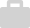

<ion-tabs class="ion-tabs">

  <ion-tab-bar class = "tab-bar" slot="bottom">
    
    <ion-tab-button (click)="change()" class="home-icon" tab="tab1">
      
        
    </ion-tab-button>

    <ion-tab-button  class="tab-buttons" tab="tab2">
      
        
    </ion-tab-button>

  </ion-tab-bar>

</ion-tabs>


  